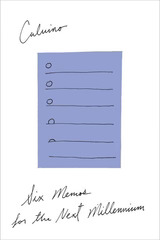

Six Memos for the Next Millennium
Lezioni americane
This is my third collection of Calvino's non-fiction works, and it lies between the first two in how approachable it is. The Uses of Literature often demanded familiarity with the works that Calvino was addressing; Collection of Sand presupposed relatively little background knowledge, comparatively. In Six Memos, the references to literature are illustrative more than assumed background, and that makes a significant difference -- as does his repeated use of extended quotations to illustrate the particular principle under discussion.
I do wonder how well Calvino thinks his own past work kept to these principles -- especially exactitude, which at one point felt like he was describing the antithesis of what I took from, for instance, If on a winter's night a traveler was doing. That book seems to be actively resist being nailed down in the way that I'd expect an exact work would submit to, though it certainly feels closer to showing deep multiplicity.
And I should say that multiplicity in particular appeals to my interests -- I am continually reminded that there are no singular causes, no individual elements upon which everything else depends both necessarily and sufficiently. One lesson I keep returning to is the importance of networks over singular nodes.